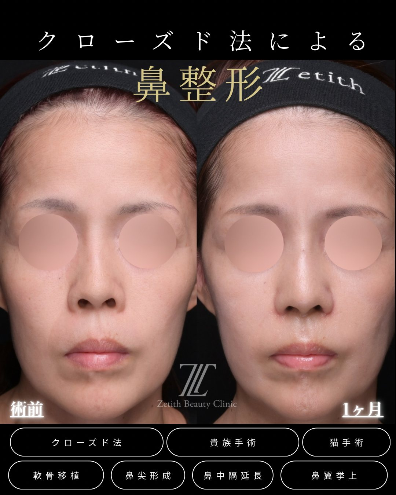
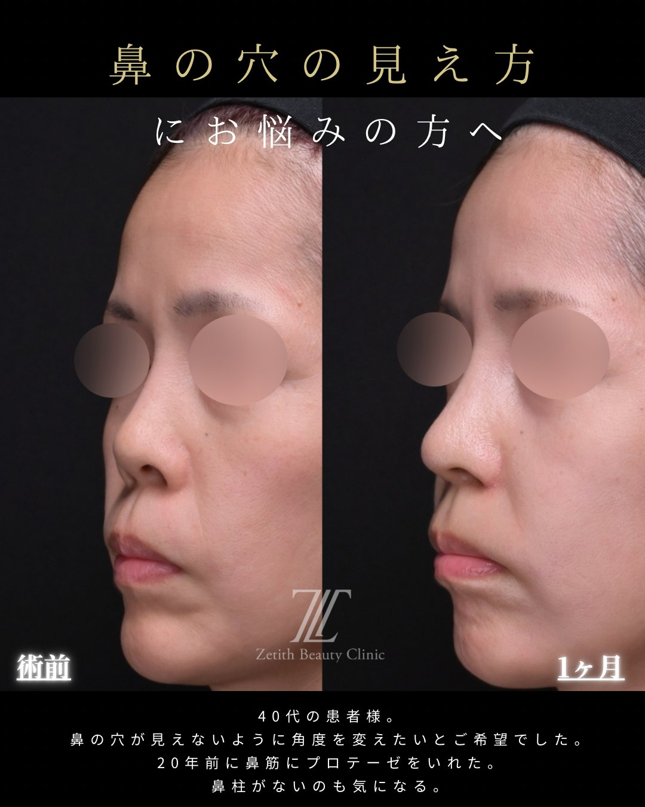

Section 01
猫手術とは？
猫手術（ねこしゅじゅつ）とは、鼻柱（左右の鼻の穴のあいだの柱）の根もとを前に引き出して、鼻先と口元のバランスを整える鼻整形です。鼻先だけが前に飛び出て見える／鼻の下が奥まっていて口元が前に出て見える（口ゴボっぽい）——こうした印象を土台から整えます。
期待できる変化
- 鼻先だけが飛び出て見える印象：鼻の下の土台を前に出し、鼻先が浮いて見えるのをやわらげる
- 口ゴボっぽく見える印象：奥まった鼻の下を整え、口元が前に出て見えるのをやわらげる
- 横顔のバランス：鼻先〜鼻の下〜口元のつながりを一連で整える
「猫手術」は通称です。鼻の下から上唇にかけての角度を鼻唇角（びしんかく）といい、ここが奥まっていると鼻先だけが前に飛び出て見えたり、口元が前に出て見えたり（口ゴボっぽく見える）します。猫手術は、鼻柱の根もと（鼻の下の土台）を前に引き出して、この見え方を整える施術です。
鼻すじを高くする隆鼻術や、小鼻の付け根を整える貴族手術とは、整える場所が異なります。当院の猫手術は自分の軟骨（耳介軟骨または肋軟骨）だけで行い、プロテーゼなどの人工物は入れません。

Section 02
こんな方に向いている（適応）
猫手術が向いているかは「鼻の下〜口元の見え方を整えたいか」がポイントです。次のようなお悩みが適応になりやすい傾向です（適応は診察により判断し、効果には個人差があります）。
① すでに鼻中隔延長を検討している人
猫手術は鼻中隔延長と一緒に行うのが基本です。鼻先を前・下に整えるのに合わせて、鼻の下〜口元まで一連でデザインしたい方に向いています。鼻中隔延長そのものについては鼻中隔延長の解説記事をご覧ください。
② 鼻の下〜口元が前に出た印象が気になる人
鼻の下から上唇にかけての角度（鼻唇角）を整えることで、口元が前に出て見える印象をやわらげたい方に選択肢となります。
③ 横顔（鼻先〜口元のつながり）を整えたい人
鼻先だけを整えても、鼻の下〜口元とのつながりが物足りないことがあります。猫手術を加えると、横顔の流れを一連で設計しやすくなります。
Section 03
貴族手術・鼻中隔延長との違い
鼻の下まわりを整える施術は混同されがちですが、整える場所で区別すると分かりやすくなります。猫手術と貴族手術は役割が別で、症例によっては併用します。
| 施術 | 整える場所 | 主な目的 |
|---|---|---|
| 猫手術 | 鼻柱の根もと〜鼻の下（鼻唇角） | 鼻先と口元のバランスを整える（口ゴボっぽさをやわらげる） |
| 貴族手術 （鼻翼基部形成） | 小鼻の付け根 | 付け根のくぼみを埋めて立体感を出す |
| 鼻中隔延長 | 鼻先（土台の延長） | 鼻先を前・下方向に整える |

猫手術は鼻柱の根もと〜鼻の下、貴族手術は小鼻の“付け根”を整える施術で、整える場所が違います。中顔面〜口元をトータルで整えたいときは、猫手術と貴族手術を併用することもあります。全体像は術式まるわかりガイドをご覧ください。
Section 04
素材（耳介軟骨と肋軟骨）
猫手術で縫い付けるのは自家組織（自分の軟骨）だけです。プロテーゼなどの人工物は入れません。素材は耳介軟骨か肋軟骨で、必要な量や併用する術式に合わせて選びます。
| 項目 | 耳介軟骨 | 肋軟骨 |
|---|---|---|
| 採取部位 | 耳のうしろ側（自分の軟骨） | あばらの軟骨（自分の軟骨） |
| 量・強度 | やわらかく、細かな調整に向く | 量を確保しやすく、しっかり支えやすい |
| 追加の傷 | 耳のうしろに小さな傷（目立ちにくい） | 胸に数cmの傷 |
| 向くケース | 必要量が少なめ・耳から採りたい | しっかり整えたい・肋軟骨を併用する鼻整形と同時 |
| 主な注意点 | 採取量に限りがある | 採取部の負担（胸の傷・痛み 等） |
Section 05
当院の猫手術
当院の猫手術は、鼻中隔延長と一緒に、皮膚表面に傷を残さないクローズド法で行います。鼻中隔延長のときに、自分の鼻中隔軟骨に自家組織を縫い付けて、鼻柱の根もとを前に引き出し、鼻の下〜口元まで一連で整えます。
猫手術は単独で完結する施術ではなく、鼻中隔延長の一部としてデザインするのが基本です。鼻先を前・下にどう整えるか、そのうえで鼻の下〜口元をどこまで整えるかを、正面と横顔の両方を見ながら決めていきます。
中顔面〜口元のバランスをさらに整えたい場合は、貴族手術（鼻翼基部形成）を併用することもあります。どこまで・どの素材で行うかは、カウンセリングでご提案します。
デザインの考え方
Section 06
症例（正面・斜め・横）
正面と横顔で症例を掲載します（猫手術は特に横顔で鼻先〜鼻柱・口元のつながりが分かりやすいためです）。タブで切り替えられます。
症例｜鼻先〜鼻柱・口元の見え方（耳介軟骨によるクローズド法・鼻中隔延長＋猫手術ほか）

images/case-neko-front.jpg

images/case-neko-side.jpg

images/case-neko-side2.jpg
- 施術内容
- クローズド法：鼻中隔延長（耳介軟骨）＋猫手術＋貴族手術＋軟骨移植＋鼻尖形成＋鼻翼挙上
- 料 金
- ¥1,130,000〜（複数術式の組み合わせ）
- 主なリスク・副作用
- 腫れ・内出血・左右差・感染・鼻先の硬さ・仕上がりの個人差 等
- ダウンタイム
- 約1〜2週間（写真は術後1ヶ月）
※ 40代の患者様。中顔面の陥凹感・鼻先の向き・鼻柱の見え方などのお悩みに対し、耳介軟骨によるクローズド法での鼻中隔延長・猫手術を含む複数術式を同時に行った症例です。正面・横顔を掲載（同意のうえ掲載／プライバシー保護のため目元を加工）。効果には個人差があり、リスク・副作用を伴います。自由診療（保険適用外）。
Section 07
費用
猫手術は鼻中隔延長に含みます（猫手術単体の料金設定はありません）。料金は鼻中隔延長の素材によって変わります（税込）。
| 鼻中隔延長（耳介軟骨）＋猫手術 | ¥880,000〜 |
|---|---|
| 鼻中隔延長（肋軟骨併用）＋猫手術 | ¥1,100,000〜 |
料金について詳しく見る（別途費用・モニター）
Section 08
ダウンタイム
腫れ・内出血は1〜2週間ほどで落ち着くことが多いです。鼻中隔延長と一緒に行うため、しばらく鼻先の腫れやつっぱり感、鼻の下まわりの違和感を感じることがあります。
肋軟骨を採取した場合は、胸の傷の痛みが数日〜1週間程度続くことがあります。経過には個人差があり、大きな予定の1〜2か月前までに施術を終えるスケジュールがおすすめです。施術別の経過はダウンタイム完全ガイドで解説しています。
Section 09
リスク・副作用
猫手術（鼻中隔延長を含む）には、以下のようなリスク・副作用が生じる可能性があります。必ずご確認ください。
主なリスク・副作用
- 腫れ・内出血・痛み・むくみ（時間の経過とともに軽快することが多い）
- 左右差、入れる量による膨らみ・口元の見え方の変化
- 入れすぎた場合に、かえって口元が前に出て見える・不自然な膨らみになることがある
- 鼻先の硬さ・つっぱり感（鼻中隔延長を伴うため）
- 耳介軟骨を採取した場合：耳のうしろの傷・一時的な違和感
- 肋軟骨を採取した場合：胸の傷・痛み、採取部の変形、まれに気胸などの可能性
- 感染、仕上がりのイメージとの違い、効果の個人差
Section 10
他院修正
他院で受けた鼻中隔延長や鼻の下まわりの施術について、状態に合わせた整え直しのご相談にも対応しています。
「鼻の下を入れすぎて不自然」「他院の鼻整形で口元の見え方が気になる」といったご相談にも対応しています。修正は状態によって方針が大きく変わるため、まずは現在の状態を診察させてください。対応できる術式の全体像は術式ガイドの他院修正でも解説しています。
Section 11
よくある質問
猫手術だけを受けることはできますか？
猫手術は鼻中隔延長のときに、自分の鼻中隔軟骨へ自家組織を縫い付けて行うため、基本的には鼻中隔延長と一緒に行います。猫手術だけを単体で行う施術ではありません。詳しくはカウンセリングでご説明します。
猫手術で「口ゴボ」は治りますか？
鼻の下〜口元の見え方を整えることはできますが、歯並びやあご（上下顎）の骨格そのものが前に出ているタイプの口ゴボは、猫手術だけで解決できるものではありません。歯科矯正やあごの手術が適応となる場合もあります。適応は診察で判断します。効果には個人差があります。
プロテーゼなどの人工物は入りますか？
当院の猫手術は自家組織（耳介軟骨または肋軟骨）だけで行い、プロテーゼなどの人工物は入れません。
猫手術と貴族手術は何が違いますか？
猫手術は鼻の下〜口元（鼻唇角）を整えて口元を引っ込んで見せる施術、貴族手術は小鼻の付け根のくぼみを埋めて立体感を出す施術で、整える部位が異なります。症例によっては両方を併用することもあります。
顔に傷は残りますか？
鼻中隔延長とあわせて皮膚表面に傷を残さないクローズド法で行うため、顔の表面に目立つ傷は残りません。素材を採取した部位（耳のうしろ・胸）には小さな傷が残ります。
費用はいくらですか？
猫手術は鼻中隔延長に含みます（単体の料金設定はありません）。目安は鼻中隔延長（耳介軟骨）¥880,000〜、肋軟骨併用¥1,100,000〜（税込）です。併用する術式の内容によって総額が変わります。